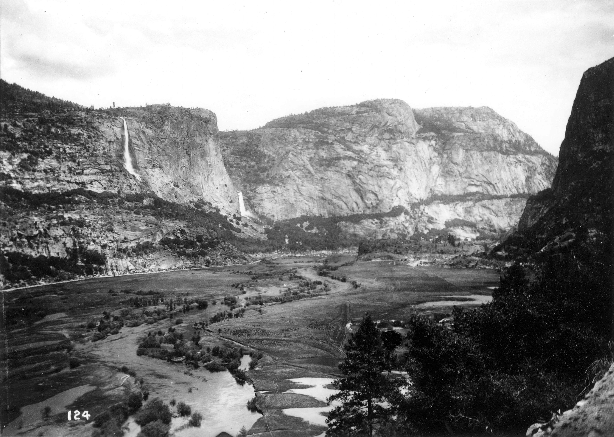

Two Visions of Conservation
By the early 1900s, conservation in the United States had split into two sharply opposed camps. On one side, John Muir and fellow preservationists said nature had value in and of itself—it should stay wild and untouched. On the other, Gifford Pinchot and the conservationists argued that nature should serve people; resources were meant to be used for the greater good. This philosophical rift boiled over during the bitter fight over Hetch Hetchy Valley in Yosemite. After San Francisco's disastrous 1906 earthquake, city leaders set their sights on damming Hetch Hetchy to secure a reliable water supply. What started as a practical argument about land use soon deepened into an ideological struggle over the way people view, value, and manage the natural world. The debate was never just about a valley. It became a test case for whether American policy would prioritize preservation or utility when those values directly conflicted.
To Muir, Hetch Hetchy wasn't just real estate. The valley was sacred—something unique and irreplaceable. Pinchot's stance was utterly different. He saw the valley as valuable only if it could meet human needs. By 1913, this debate made its way to Congress. There, Pinchot faced lawmakers who weren't just wrestling with environmental questions—they were also nervous about expanding federal power over resources. The rhetorical terrain was tricky. Pinchot needed to make the case for federal involvement, convince practical-minded lawmakers, and push back against both environmental and political opposition. His testimony didn't win people over by drowning them in evidence. Instead, it changed the very way the debate would be fought. Pinchot used his authority and a utilitarian vocabulary, and stitched together logical points with emotional cues. He pushed the idea that resource use wasn't just reasonable—it was the only viable path, making Muir's views look disconnected from the realities of governance and decision-making.
"Dam Hetch Hetchy! As well dam for water-tanks the people's cathedrals and churches, for no holier temple has ever been consecrated by the heart of man."
— John Muir, The Yosemite, 1912